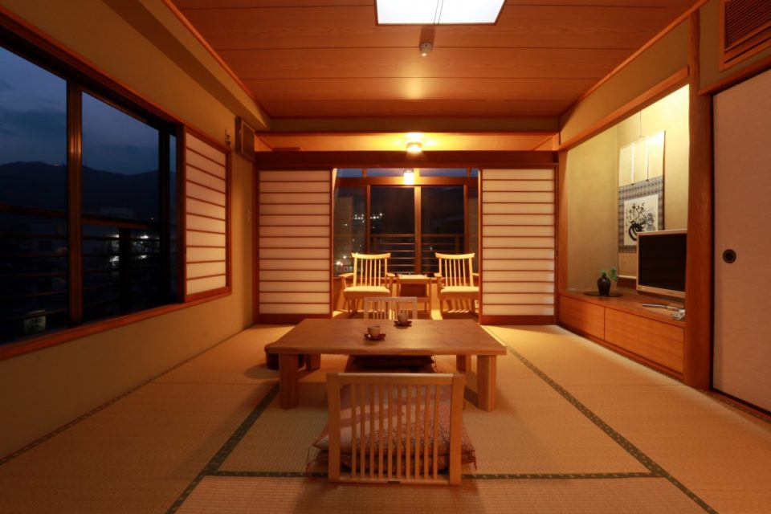
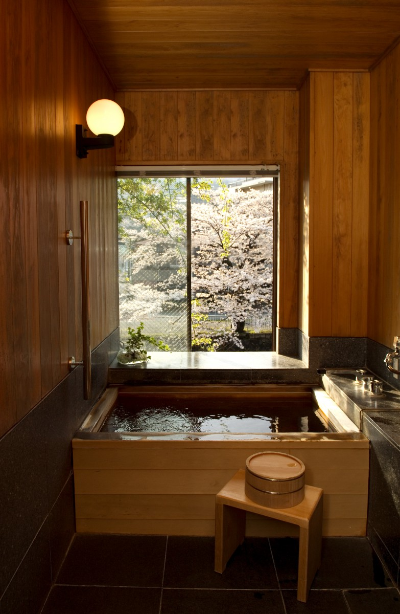
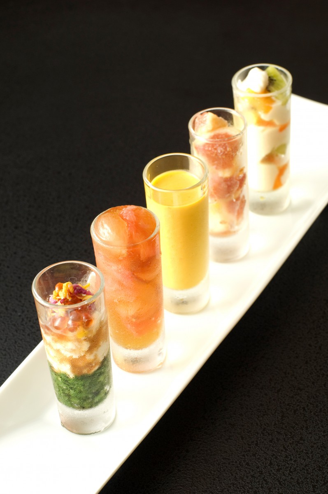
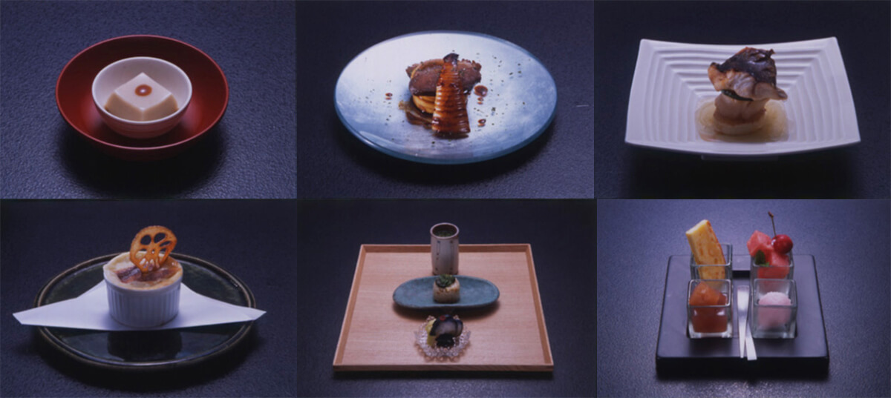

Префектура Сидзуока · Ито · рёкан
Обержа «Ханагоёми» в Ито: два номера, кипарисовая купель и кухня трёх поколений

Обержа «Ханагоёми» на окраине Ито, пожалуй, самый маленький рёкан с кухней в Японии. Снаружи он похож скорее на изящный жилой дом, чем на гостиницу, а внутри встречают так, будто вы вернулись к родным в деревню.
Дом
Гостиница, похожая на жилой дом
От станции Ито до «Ханагоёми» около десяти минут на машине. Дом тихо стоит на берегу реки Мацукава, и у входа невольно задумываешься, туда ли пришёл. Приподнимаешь занавеску норэн, открываешь стеклянную решётчатую дверь, и навстречу выходит хозяйка с мягкой улыбкой.
Гостя усаживают за стойку у входа. Пока взгляд отдыхает на полевых цветах в маленькой вазе, приносят сладость к прибытию. С первого приезда сюда мы были уверены, что этот ритуал будет повторяться всегда, сколько бы раз мы ни возвращались. Но время идёт, и гостиница тоже меняется.
Рёкан держали три поколения женщин одной семьи: бабушка была старшей хозяйкой, мать хозяйкой, а дочь готовила. К 2019 году дочь осталась одна и ведёт дом сама, и за плитой, и в роли хозяйки.
Номер
Свой онсэн в купели из кипариса

Большой общей бани здесь нет, открытых купелей при номерах тоже. Всего два небольших номера с одинаковой планировкой, и в каждом своя купель из кипариса хиноки, куда подведена вода онсэна. Роскошной обстановки и вида на японский сад тоже не будет. Тому, кто привык к большим отелям, этого может показаться мало, но стоит остаться на ночь, и понимаешь: именно без лишнего здесь и отдыхаешь по-настоящему.
Первым делом идёшь в купель. Опускаешься в маленькую ванну, и вода с шумом переливается через край. Это удивительно приятно, и сам не замечаешь, как начинаешь напевать: онсэн ведь только твой.
После купания можно раскинуться на татами, ни о ком не думая. Такая свобода и есть главное, что даёт этот маленький дом. Ветер с реки Мацукава под окном остужает разогретую кожу, и глаза сами закрываются.
Ужин
Кухня, которую строили три поколения

Ужин подают в одной из двух столовых: в комнате с окинавскими татами или в зале с деревянным полом. В обеих стоят удобные стулья, и это приятно. Блюда приносят по одному, с неспешными паузами, и каждое красиво.
Подача такая изящная, что жалко трогать палочками, но на вкус всё неожиданно сильное и глубокое. Чувство формы и вкус сошлись здесь благодаря умению и сердцу, которые три поколения женщин передавали друг другу.

Лучший пример это «бабушкин кунжутный тофу». Старшая хозяйка готовила его своими руками, даже когда ей было почти сто лет. Она и мать не просто подавали еду, а рассказывали гостям, сколько любви вложено в каждое блюдо. К 2019 году их уже не стало, но этот настрой в доме остался. Номер с ужином и завтраком стоил в 2019 году от 28 080 иен на человека, с налогом и сервисным сбором.
Обержа «Ханагоёми»
- Адрес
- префектура Сидзуока, Ито, Ока, 75-32
- Телефон
- +81 557-38-2020
- Номера
- 2 номера, каждый с купелью из кипариса с водой онсэна Ито; дом можно снять целиком
- Заезд / выезд
- 15:00 / 11:00
- Цены / Вход
- от 28 080 иен на человека с ужином и завтраком (с налогом и сервисным сбором); банковские карты не принимают
- Как добраться
- от станции Ито (линия JR Ито, железная дорога Идзу Кюко) около 10 минут на такси
- Сайт
- hanagoyomi.jp
Фото: Ко Миядзи.